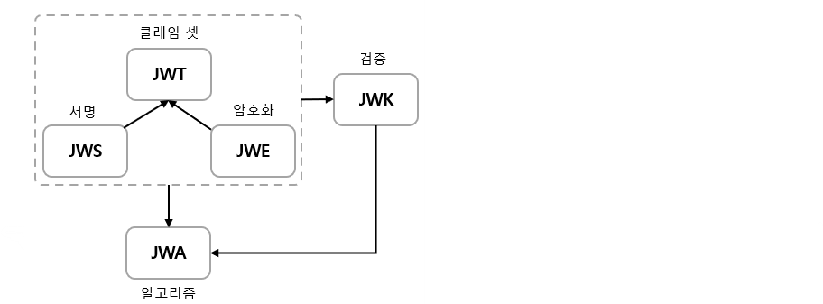
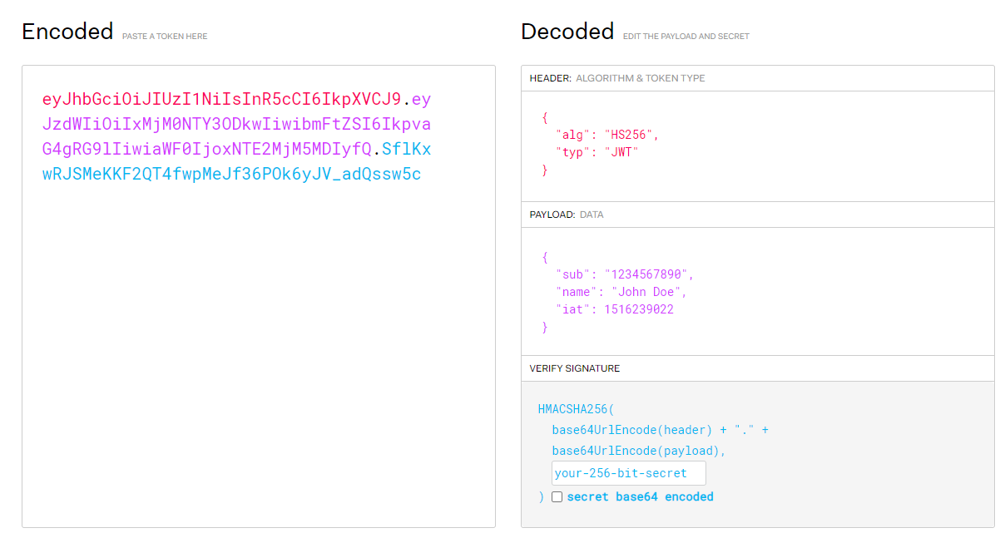

JOSE(Json Object Signing and Encryption)
당사자간 클레임의 안전한 전송을 위한 방법을 제공하는 프레임워크. IETF에서 표준화 하였다.
JOSE는 이러한 목적을 위해 여러 스펙을 제공함.
JWT(Json Web Token)
두 당사자 간 안전하게 전달되는 클레임을 표현하기 위한 개방형 표준으로서 추상적인 개념이며,
구현 방식으로 JWS 혹은 JWE가 있다.JWS(Json Web Signature)
JWS는 디지털 서명 혹은 MAC(메시지 인증 코드)로 보안된 콘텐츠를 표현하는 방법.JWE(Json Web Encryption)
의도한 수신자만 읽을 수 있도록 암호화된 데이터를 나타내는 형식.JWK(Json Web Key)
HMAC, ECC, RSA 알고리즘을 사용해 공개 키 세트를 JSON 객체로 나타냄. 일반적으로 개인키 서명 후 공개키로 검증하는데 사용. 인가서버에서는 JWT를 서명하는데 사용했던 public key를 제공하기 위해 JWK 형태로 표현된 key를 접근할 수있는 URL을 제공한다.JWA(Json Web Algorithm)
JWS, JWK 및 JWE에 필요한 알고리즘 목록. JWS 헤더 및 JWS 페이로드의 내용을 서명하는데 사용됨.

JWT(JWS) 구조
Header : 일반적으로 토큰 유형(JWT)과 서명 알고리즘(HMAC SHA256, RSA)으로 구성됨.
Payload : claim을 담고있는 부분. 후술.
Signature : Base64urn encoding으로 header와 payload를 인코딩 한 후, 점(.)으로 연결하고 헤더에 정의한 서명 알고리즘을 통해 생성함.

Claim
Payload에는 토큰에 담을 정보가 담겨 있으며, 이를 Claim Set이라고 한다. Claim Set은 Key : Value 형태.
클레임의 종류
1) Registered Claims(등록된 클레임)
토큰에 대한 정보를 담기 위해 이름이 이미 정해진 클레임이며, 선택적으로 사용할 수 있다.
- iss : 토큰 발급자(issuer)
- sub : 토큰의 제목, 주제(subject)
- aud : 토큰 수신자(audience)
- exp : 토큰 만료시간(expiration Time)
- nbf : 이 시간 이전에는 이 토큰을 처리하지 않아야 함을 의미(not before)
- iat : 토큰 발급된 시간(issued at)
- jti : JWT의 고유 식별자. 중복 방지를 위해 사용.
2) Public Claims(공개된 클레임)
충돌이 방지된 이름을 가지고 있어야 하며, 이를 위해 URI형식으로 명명.
1
2
3
{
"https://example.com/jwt_claims/is_admin" : true
}
3) Private Claims(비공개 클레임)
당사자간(보통 클라이언트-서버) 협의하에 사용되는 클레임 이름.
공개 클레임과는 달리 이름이 중복되어 충돌이 발생할 수 있으므로 사용시 주의.
1
2
3
4
{
"username" : "user",
"age" : "20"
}
JWT은 필요한 모든 정보를 자체적으로 지니고 있으며, 전달이 쉽다는 장점이 있다. 인증 및 인가, 데이터의 안정성 있는 교환 등에 유용하게 사용될 수 있다.
JWK 관련 님버스(Nimbus JOSE) 제공 객체
암호화 키를 저장하는 방식,(JWK - JWKSet)
또한 이를 확장하여 암호화 및 전자서명 이후 검증을 위한 키 생성, 변환 등을 지원하기도 한다.(구현체 : RSAKey(비대칭), OctetSequenceKey(대칭), ECKey, OctetKeyPair)
++ JWKGenerator

REFERENCES
https://www.inflearn.com/course/정수원-스프링-시큐리티
https://www.letmecompile.com/api-auth-jwt-jwk-explained
https://syntaxsugar.tistory.com/entry/JOSEJSON-Object-Signing-and-Encryption